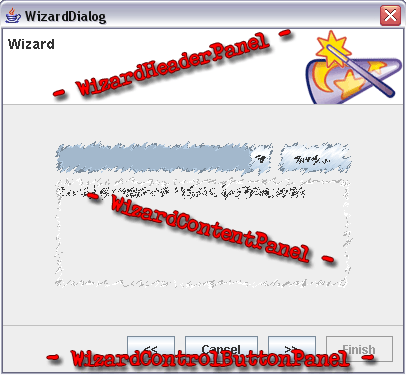

If someone needs a "framework" for wizard like dialogs, he should have a look at the content of this package.
The dialog looks like this:

And here is a code snippet: myImplementingClass is a subclass of WizardContentPanel, owner represents the owning javax.swing.JFrame.
WizardContentPanel[] arr = new WizardContentPanel[3];
JFrame owner = new JFrame();
myImplementingClass t1,t2,t3;
t1 = new myImplementingClass("t1");
t1.setBackground(Color.PINK);
t2 = new myImplementingClass("t2");
t2.setBackground(Color.CYAN);
t3 = new myImplementingClass("t3");
t3.setBackground(Color.MAGENTA);
arr[0] = t1;
arr[1] = t2;
arr[2] = t3;
int ret = WizardDialog.showDialog(owner, "Wizard", arr);
Have fun with it!